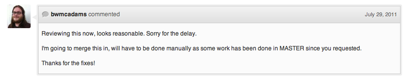

MongoDBとHadoopの蜜月関係
第7回 MongoDB 勉強会 in Tokyo 2011/11/15 at GMO Yours
自己紹介
大学/大学院
- 自然言語処理：形態素列検索・置換システム
- 言語発達の計算機シミュレーション(ElmanNet+SOMみたいな)
就職
- 検索エンジン(の広告最適化とか
- コンテンツマッチエンジンの設計開発とか
- エンジニアサポートの中の人とか
- データマイニング
部門個人
ログの解析好きですか？
ログの解析していますか？
解析部門の価値認られていますか？
解析部門の人は足りていますか？
SPOF？
Daemon管理？
クラスタ管理？
勘弁して下さい > <
Hadoop?
Namenode
SecondaryNameNode
Datanode
TaskTracker
JobTracker
Daemonのお守り
DRBDの構築
hive
あいつの結果待ってたら
2分とかザラに待つんですけど・・・
Schema変えるのもねぇ・・・
HBase?
HBase
ZooKeeper
これ以上のDaemonのお守りは
勘弁して下さい!!
そんな解析担当者に贈りたい
Mongo-Hadoopな生活
※ 多分に私見が混ざっています
Contents
- MongoDB
- Hadoop
- mongo-hadoop
- Architecture
- mapReduce
- Pros./Cons.
- Tips
MongoDB
Cons
- OOM in Map/Reduce
- Rich Resources required (memory / disc)
Pros
- Schemaless
- Full Index
- Replication & High Availability
- Auto Sharding
Hadoop
Cons
- Difficulty in Operation
- Many Daemons
- HBase requires more Daemons
- hive spends much time
Pros
- Scaleout
- Map/Reduce enables us to Calculate Large Data
- Scalable FileSystem (HDFS) supported
We want
- Calculate Large Data Easily (No OOM Killer)
- No more management Daemons
- No more non-"Healthy"
- Find data in a moment on specific query (we use REST API)
in MongoDB and Hadoop
MongoDB
- Difficult Calculating Large Data
Hadoop
- Too much Daemons
- Often not "Healthy" warning
- Cannot Find data in a moment (HBase is too difficalt to operate)
mongo-hadoop
mongo-hadoop
What?
mongo-hadoop is Adapter. It enables Hadoop to access MongoDB data.
mongo-hadoop supports shards and chunks enviromnent ... ?
mongo-hadoop...
not supported multiple-sharding key
Pull Request...
Merged!
mongo-hadoop supported
shards and chunks enviromnent.

Sample
Driver
MongoConfigUtil.setInputURI( conf, "mongodb://localhost/test.in" ); // set input host, db, collection MongoConfigUtil.setOutputURI( conf, "mongodb://localhost/test.out" ); // set output host, db, collection
Mapper
public void map( Object key, BSONObject value, Context context ) throws IOException, InterruptedException{
// get pair consisted of Object key and BSONObject value in MongoDB document
we gotta in mongo-hadoop
MongoDB Hadoop
notEasy Calculate Large Data
Hadoop MongoDB
Too muchLimited DaemonsOften not "Healthy" warningCannotCan Find data in a moment(HBase is too difficalt to operate)
Pros./Cons. in Mongo-Hadoop Architecture
Pros.
- MongoDB excludes SPOF and eliminates Tortures by daemon management
- MongoDB enables us to get data in specific query
- Hadoop calculates Large Data
- Hadoop is rather "Large Data calculator" than "Large Data Storage"
- Calculated Data is restricted by MongoDB Query rather than Filter in Mapper Class
Cons.
- Require Rich Disk and Memory
- Require Low Performance (a little)
Tips
Calculated Data filtered before Hadoop Map/Reduce
- mongod can find big data as quickly because mongo-hadoop uses config information and asks data in chunk (so mapper asks single mongod)
- However, BSON decorder is too slow. It blocks transporting data from mongod to mongoclient (mongo shell or other driver)
- So you specify "fields" and get necessary data
- e.g. mapper tasks took 3 min. but when we specify "field", mapper tasks took 1.5 min.
Reducer Class is also used Combiner Class
- make reducer class extends
Reducer<BSONObject, BSONWritable, BSONObject, BSONWritable> - we use it also as a combiner class.
宣伝
「ユーザの生活を楽しくする」
「より楽しくお金を払ってもらえる」
「ビジネスを加速させる」
DataMiner/DataScientist
を募集しています。
つ @muddydixon
/